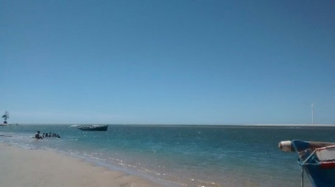

Geoinfos
Informações técnicas sobre relevo, população, IDH etc.
| INFORMAÇÕES | |
|---|---|
| Municípios limítrofes | Aracati, Itaiçaba e Beberibe |
| Fundação | 27 de março de 1992 (29 anos) |
| Área total | 280,184 km² |
| Clima | Tropical Atlântico |
| IDH | 0,633 — médio |
| PIB | R$ 60 168,249 mil |
| INFORMAÇÕES TERRITORIAIS | |
|---|---|
| Número de habitantes | 16.115 habitantes |
| Superfície de Fortim |
28 207 hectares
282,07 km² (108,91 sq mi) |
| Densidade populacional | 57,5 hab./km² |
| Altitude de Fortim | 4 metros de altitude |
| Coordenadas geográficas decimais |
Latitude:
-4.4526
Longitude: -37.8003 |
| Coordenadas geográficas sexagesimais | Latitude: 4° 27' 9'' Sul , Longitude: 37° 48' 1'' Oeste |
| INFORMAÇÕES DO MUNICÍPIO | |
|---|---|
| Endereço da Prefeitura Municipal de Fortim |
Fortim
Prefeitura de Fortim
Rua José Porfírio, 35 - 1º andar FORTIM - CE, 62815-000 Brasil Work : +55 88 3413-1001 Fax (88) 3413-1001 |
| Telefone da prefeitura |
(88) 3413-1007
Internacional: +55 88 3413-1007 |
| Fax |
(88) 3413-1001
Internacional: +55 88 3413-1001 |
| Endereço eletrônico da prefeitura |
Não disponível
|
| Site oficial do município | fortim.ce.gov.br |
| INFORMAÇÕES DO ADMINISTRATIVAS | ||
|---|---|---|
| Prefeito de Fortim | NASELMO DE SOUSA FERREIRA | |
| Partido politico | MDB | |
| INFORMAÇÕES DE TRANSPORTE | |
|---|---|
| Transporte urbano disponível | - |
| Aeroporto |
Aeroporto Internacional Pinto Martins
110.8 km
Aeroporto de Sobral
294.5 km
Aeroporto Dix-Sept Rosado
96.4 km
|
| INFORMAÇÕES DE DISTÂNCIA A OUTRAS CIDADES | ||
|---|---|---|
| São Paulo : 2328 km | Rio de Janeiro : 2135 km | Brasília : 1679 km |
| Salvador : 951 km | Belo Horizonte : 1836 km | Manaus : 2473 km |
| Curitiba : 2637 km | Fortaleza : 116 km mais perto | Goiânia : 1849 km |
| Belém : 1236 km | Porto Alegre : 3178 km | Guarulhos : 2306 km |
| Campinas : 2283 km | São Luís : 754 km | Recife : 515 km |
| Distância calculada em linha reta! | ||
Fonte: Wikipedia e Cidade Brasil
História
Conheça mais sobre a história de Fortim.
Em suas origens, consta como fruto da Proto-História do Ceará, tendo sido fundado por Pero Coelho de Souza, na sua malograda Expedição de 1603. No itinerário Paraíba-Ibiapaba e por conveniência de ordem regimental, baixou em acampamento exatamente nessa parte costeira, demorando-se o tempo necessário ao engajamento de tropas indígenas locais.
Por ocasião do retorno, miseravelmente abatido e destroçado, acampou no mesmo local, conduzindo apenas dezoito soldados mancos. Desolado, buscou o itinerário que o levaria à Paraíba, onde esperava encontrar apoio. Sem nada conseguir, retornou ao ponto de origem trazendo em sua companhia D. Maria Tomázia, sua mulher e cinco filhos menores. Fundou, então, ou denominou o precedente Forte São Lourenço de Forte Nova Lisboa ou Nova Lusitânia.
A economia de Fortim tem como principal base a agricultura, turismo e pescaria.
Pontos Turísticos
Saiba mais sobre os melhores lugares e o que fazer em Fortim.
Praia Pontal de Maceió
Praia Canto da Barra

Praia das Agulhas
Como Chegar?
Veja como chegar nos melhores pontos de Fortim.